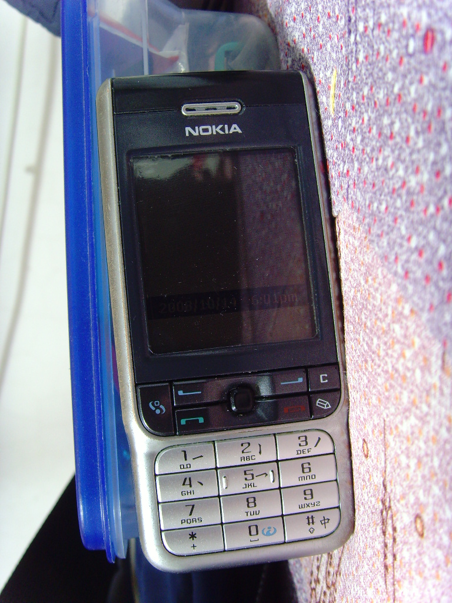
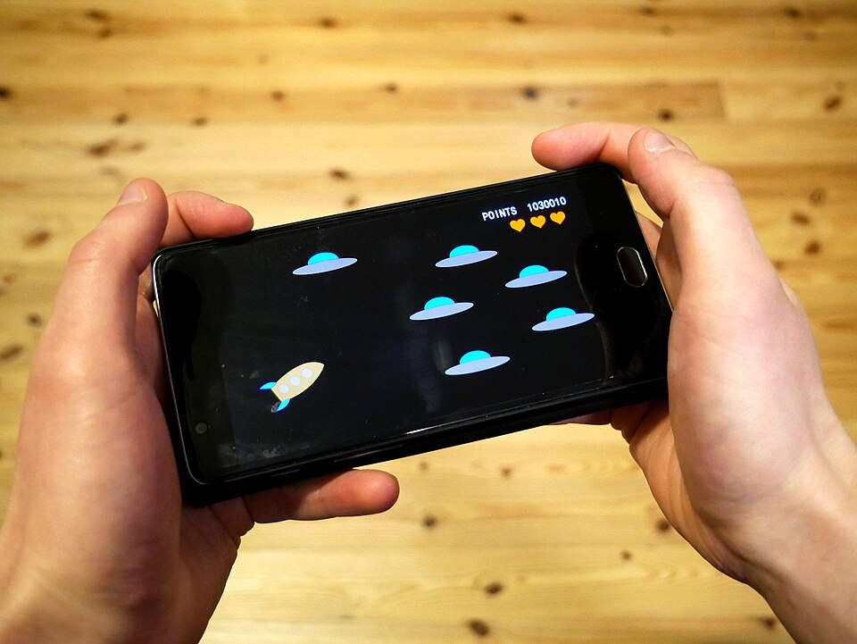
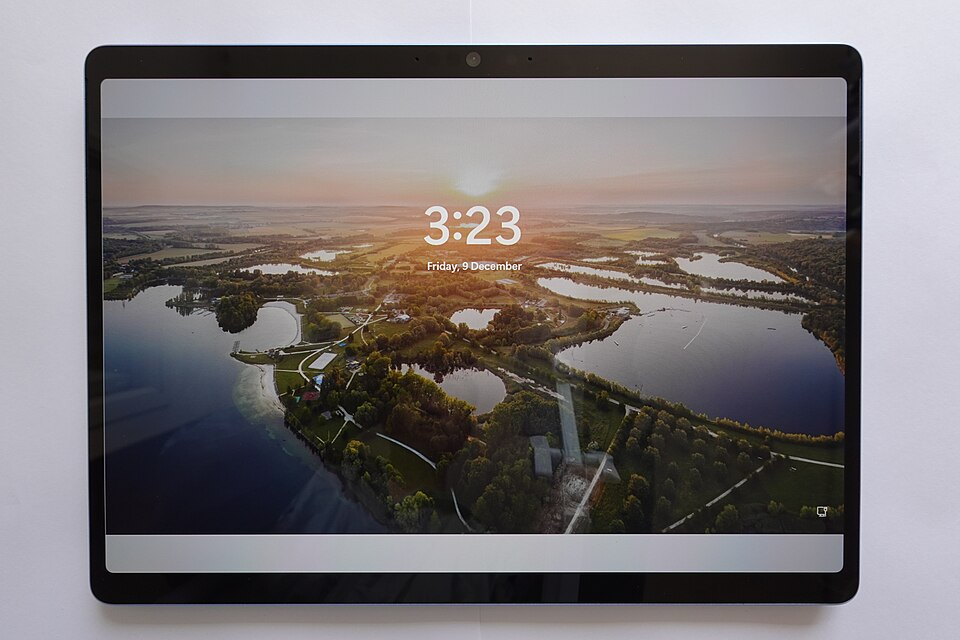
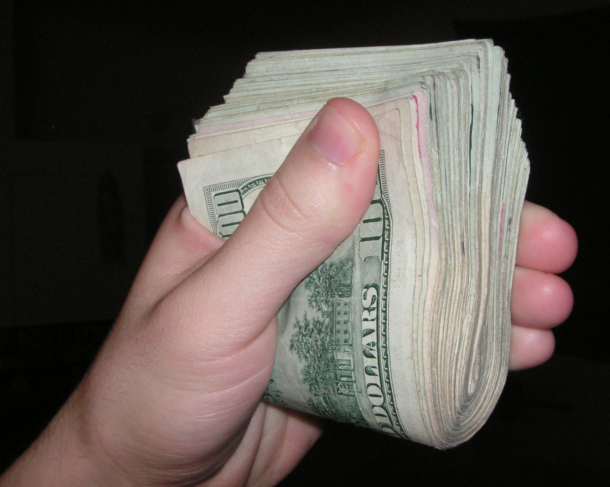

2010年值800万没卖的网站
三年后被我25万买下，三个多月后75万卖出
2010年，塞班手机最火的时候，这个游戏站在圈里有点名气，一个月能赚四十多万。当乐来找过站长，出价800万想买，站长没卖。
三年后，这个网站被人花25万买走了。
买走它的人，是我。
当时没一个人看好这笔买卖。塞班都快没人用了，花25万买个塞班游戏站，不是往水里扔钱吗？
可三个月后的事，谁也没想到。
塞班最火的那几年，这个站在圈里挺有名。一个月赚四十多万，当乐出价800万想收购，站长没卖——他觉得还能更值钱。
后来的事大家都看到了：塞班不行了，安卓起来了，诺基亚一天不如一天。站里的收入也跟着往下掉，从一个月四十多万，掉到几千块。
到2013年底，站长在网上挂出了转让。我在网上找到他，谈了几轮，25万定了。
原站长为什么自己不做？塞班大势已去，让他从零再搭一套安卓的东西，投入不小，结果也没底，他不想再折腾了，干脆整体卖掉。

接手的时候，这个站每天还有八千多人上来，找游戏、下游戏、聊攻略。月收入虽然只剩几千块，可用户是真的，需求是真的。
塞班是过气了，可这八千多人还在。系统没了，人还在。
原来那套是塞班时代的架构，我把它整个改造了一遍，让后台能同时装塞班和安卓的内容。这一步不弄好，后面都没法弄。
安卓游戏一批批补进来：新游、攻略、下载、评测，照着老用户爱玩的类型铺。塞班的老内容留着，新内容往上加，两边都不耽误。

游戏站靠搜索吃饭。我把关键词、标题、描述、内链重新过了一遍，重点做"安卓游戏下载"这类词，让新频道能被搜到。
那段时间所有事都是我一个人干，白天改页面，晚上盯数据。

三个月下来，日流量从八千多涨到两万多，月收入从几千块涨到四万多。
收购方就是这时候来的。75万，谈得很快，没怎么拉扯。
扣掉中介费，四十多万落进我手里。
那是我一生中认为最成功的一笔收购。

现在回头看，这笔买卖能成，道理其实不复杂：大多数人看一个行业，只看它"死没死"。我看的是里面的人还在不在。人在，需求就在，它就只是被看低了，不是没价值。
当然，这也是那个年代才有的机会。塞班转安卓，新老交替，窗口就那么几年。现在再去找个过气老站照着改，多半复制不了——多数过气项目，用户是慢慢散光的。
那之后我再没做过这类事。但每次听人说"这行业不行了"，我还会想起那八千多人——他们换了新手机，又跟着我跑到新地方去了。